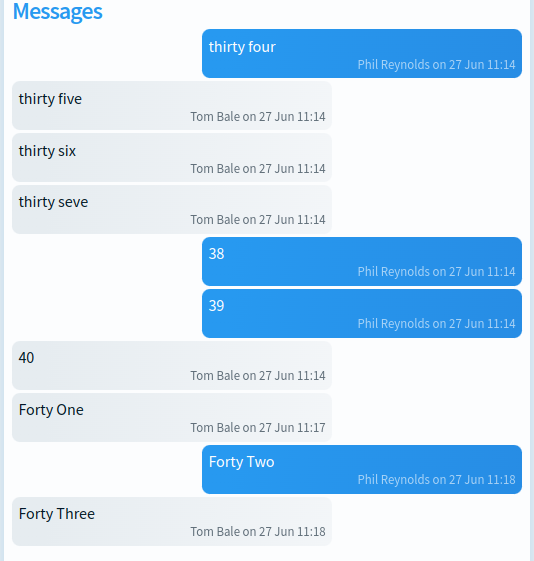
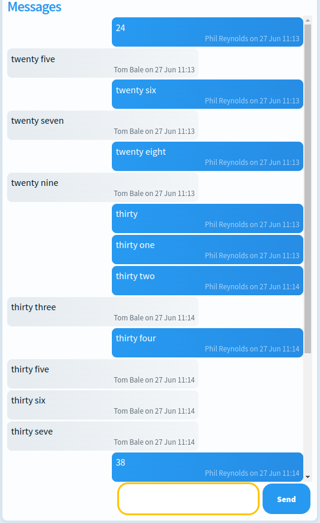
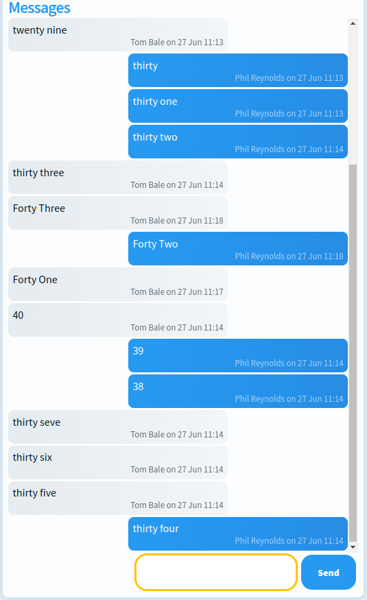
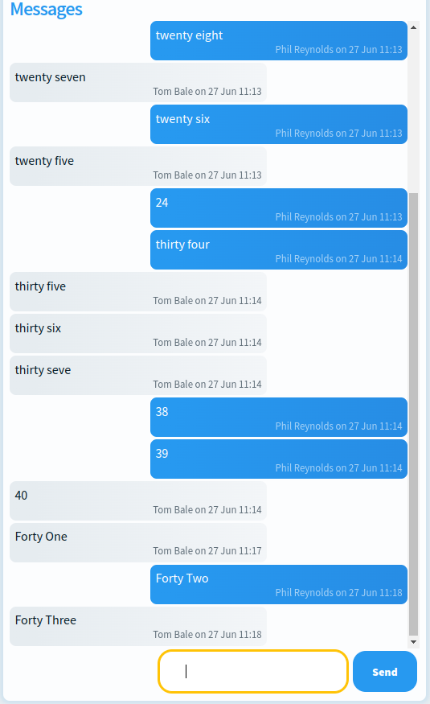

Hotwire Handbook - Part 2 - Pagination
Welcome to Part 2, I'm breaking pagination out into its own part, because there are quite a few moving parts that come with pagination.
This particular section would not be possible without this excellent guide by David Colby. I'm going to cover quite a lot of the same ground that David does, but in a slightly different way.
I'm also going to presume that you're comfortable with pagination in general and the Pagy Ruby Gem. The Pagy Gem has brilliant documentation, so go give that a quick spin first if you haven't used it before.
This is part 2 of my Hotwire Handbook, the aim of this is to complement the official Turbo Handbook and other great sources out there and also for my own information and recollection! Part 1 covers toggle buttons, content updates and live counters. You can find Part 1 here
Contents
- Part 1 - Pagination on an index page with a button to Load More
- Part 2 - Infinite Scrolling and Auto Clicking
- Part 3 - Multiple paginated sections on one page
- Part 4 - Pagination but backwards - for chats
Paginating an index page
For this first example we're going to reference Daily Brew. Daily Brew is an open-source coffee logging app, built with Rails 7 and Hotwire. Part of Daily Brew is a big list of UK coffee roasters, we're mainly looking at the Roasters Index page in this example.
The first thing we want to do is a fairly normal Pagy set up
Our controller's index action returns a paginated list of roasters.
# app/controllers/roasters_controller.rb
class RoastersController < ApplicationController
def index
@roasters_count = Roaster.all.count
@pagy, @roasters = pagy(Roaster.all.order('available_coffees_count DESC, name ASC'), items: 10)
end
end
Then our index page renders our collection of roasters. This uses some snazzy Rails shorthand for rendering a collection. You can learn more about this shorthand in the Rails Docs, or this guide from Thoughtbot. You can see we have a couple of extra bits around our collection.
<%# app/views/roasters/index.html.erb %>
<%= turbo_frame_tag 'page_handler' %>
<div id="roasters" class="card-collection row">
<%= render @roasters %>
</div>
<%= render 'shared/index_pager', pagy: @pagy %>
Then our index page renders our collection of roasters. This uses some snazzy Rails shorthand for rendering a collection. You can learn more about this shorthand in the Rails Docs, or this guide from Thoughtbot. You can see we have a couple of extra bits around our collection.
<%# app/views/roasters/index.html.erb %>
<%= turbo_frame_tag 'page_handler' %>
<div id="roasters" class="card-collection row">
<%= render @roasters %>
</div>
<%= render 'shared/index_pager', pagy: @pagy %>
To look a the three key sections of our index page:
The page handler is an empty turbo frame that we are going to use as a target later on for our Turbo Stream content from the server.
We then render each of our roasters in the _roaster partial.
Finally we render our index-pager, this is our partial for the pagination controllers. We have a few extra bits in this, we're leveraging the controller_name helper to construct an ID and class for the html. We do this as we share this pager across several views from different controllers.
<%# app/views/shared/_index_pager.html.erb %>
<div id="<%= controller_name %>_pager" class="pager <%= controller_name %>-pager row">
<% if pagy.next %>
<%= link_to(
'Load More',
"#{controller_name}?query=#{params[:query]}&page=#{pagy.next}",
data: {
turbo_frame: 'page_handler',
controller: 'autoclick'
},
class: 'btn btn-primary'
) %>
<% end %>
</div>
If pagy returns a next page, we render a link to that next page. We're using the controller_name helper again here, to programmatically construct the link. This link is targeting the page_hander Turbo Frame. This informs Turbo that the response from this link should replace the content of the page_handler frame only. We need to explicitly declare this as our link is not nested within that turbo frame.
We then use a Turbo Frame render variant for the response. This means that when our controller responds to our Turbo Frame request, instead of re-rendering the index.html.erb file it looks for index.html+turbo_frame.erb and renders that instead. (This is worth remembering for something quite a bit later on!)
Our Turbo Frame variant content is wrapped in a page_handler Turbo Frame, as our link is looking to target that Turbo Frame. Inside this turbo frame is where things get interesting. Instead of rendering HTML content we render two Turbo Streams.
<%# app/views/roasters/index.html+turbo_frame.erb %>
<%= turbo_frame_tag "page_handler" do %>
<%= turbo_stream_action_tag(
"append",
target: "roasters",
template: %(#{render @roasters})
) %>
<%= turbo_stream_action_tag(
"replace",
target: "roasters_pager",
template: %(#{render "shared/index_pager", pagy: @pagy})
) %>
<% end %>
The first of appends @roasters to the existing list of roasters, using the ID of the parent element.
The second replaces the pager with an updated version. So if we were on "page 2", the link would point to "page 3". We click the link, more roasters are rendered and the link is replaced so it points to "page 4"
There is one more bit we need to add to wire this up. We need to tell our application to respond to the turbo frame request variant. Simply add the before_action filter below to our application controller
# app/controllers/application_controller.rb
class ApplicationController < ActionController::Base
include Pagy::Backend
before_action :turbo_frame_request_variant
protected
def turbo_frame_request_variant
request.variant = :turbo_frame if turbo_frame_request?
end
end
With all that plumbed in, when the "Load More" link is clicked, a Turbo Frame request is made to the /roasters end point. The controller responds to that request with the index.html+turbo_frame.erb partial. Turbo processes the two turbo streams in the page_handler turbo frame.
This is a fairly elegant solution that lets the user press the button when they want to load more onto our index. But we can do better than that. With 16 lines of JavaScript!
Infinite Scrolling and Auto Clicking
In order for our page to allow a seamless scrolling experience we don't need to do much more. We're going to leverage stimulus-use which is a small extension to stimulus. First we need to add this to our import map. Add the following line to app/config/importmap.rb
# app/config/importmap.rb
pin "stimulus-use", to: "https://ga.jspm.io/npm:stimulus-use@0.50.0-2/dist/index.js"
Note: If you're not using import maps then refer to the docs for how to install the stimulus-use library.
Next we need to create a new controller in our javascript folder, and add in our 16 lines of javascript.
// app/javascript/controllers/autoclick_controller.js
import {Controller} from "@hotwired/stimulus"
import {useIntersection} from 'stimulus-use'
export default class extends Controller {
options = {
threshold: 0.5
}
connect() {
useIntersection(this, this.options)
}
appear(entry) {
this.element.click()
}
}
Finally we need to add this controller to our "Load More" button. If you've been C&Ping the code so far, you already have this. If not, ensure you index_pager has:
data: {
turbo_frame: 'page_handler',
controller: 'autoclick'
},
Stimulus-Use handles all the complicated viewport intersection logic and we just say what to do when the button appears.
When the "Load More" element appears into view, it gets programmatically clicked.
Multiple Paginated Sections on one Page
We've done the bulk of the work now, getting pagination with an infinite scrolling setup, but there are a few extras we need to do if we want to consider multiple different paginated sections on one page.
For this, the main focus we need to have is clear naming conventions. The Daily Brew admin dashboard has three paginated tables. Each table has its own page_hander and specific ID in the HTML, as well as partials for the table and table pager.
We use a shared Turbo Frame response varianta that contains the Turbo Streams for each of the tables. Depending on which table is being scrolled, the response will render the correct turbo strea
A nice straight forward extension to a single paginated section.
Paginating a Chat
Switching example app, we're going to look at a section of the Ryalto V4 Prototype. We're building chat functionality using hotwire.
One of the quirks about Chat is that the expected behaviour is to start at the bottom of the conversation and be able to scroll up to older messages. In order to implement this we need to reverse our pagination.
In our messages_controller we set @messages to @chat.messages.order('created_at DESC')
# app/controllers/chats/messages_controller.rb
before_action :chat, only: %i[index new create update]
# GET /chats/:id/messages/
def index
@pagy, @messages = pagy(@chat.messages.order('created_at DESC'), items: 10)
end
So the newest messages appear at the bottom. Great! But that's not our problem solved.
By default, the web browser will set the scroll position to the top of a container. Which isn't what we want.
There is a fairly simple way to get around this. If we set the flex-direction to column-reverse then each element within that flex container is rendered in the reverse order, and the scroll bar defaults to the bottom.
But now our messages are in the wrong order! To get around this, when our erb renders the messages, we can just reverse this direction <%= render @messages.reverse %> in our index.html.erb file
But there's something funky going on here. When we hit our pagination, the direction is reversed
We also need to reverse the directions in our index's Turbo Frame response variant
# index.html+turbo_frame.erb
<%= turbo_frame_tag "page_handler" do %>
<%= turbo_stream_action_tag(
"prepend",
target: "messages",
template: %(#{render @messages.reverse})
) %>
<%= turbo_stream_action_tag(
"replace",
target: "messages_pager",
template: %(#{render "chats/messages/pager", pagy: @pagy})
) %>
<% end %>
There we go!
There's one other "gotcha" that I came across while implementing this, because the messages index is already a Turbo Frame that is loaded inside a chat partial, we need to be aware of the type of requests that we are sending.
Our chat messages are rendered by the following lazy loaded turbo frame
<%= turbo_frame_tag "chat_messages",
src: chat_messages_path(chat),
target: "_top" do %>
<p>Loading...</p>
<% end %>
Because this is a turbo frame request to the index path, the response will use the Turbo Frame render variant.
In order to get around this, and preserve our functionality, we can move our index view to a partial and render it inside the Turbo Frame request variant, but outside of the page_handler turbo frame.
<%# app/views/chats/messages/index.html+turbo_frame.erb %>
<%= turbo_frame_tag "page_handler" do %>
<%= turbo_stream_action_tag(
"prepend",
target: "messages",
template: %(#{render @messages.reverse})
) %>
<%= turbo_stream_action_tag(
"replace",
target: "messages_pager",
template: %(#{render "chats/messages/pager", pagy: @pagy})
) %>
<% end %>
<%= render "chats/messages/index" %>
<%# app/views/chats/messages/_index.html.erb %>
<%= turbo_frame_tag :chat_messages, target: "_top" do %>
<%= turbo_frame_tag 'page_handler' %>
<div id="messages_container">
<div id="messages">
<%= render @messages.reverse %>
</div>
<%= render 'chats/messages/pager', pagy: @pagy %>
</div>
<% end %>
The inital Turbo Frame request is from the "chat_messages" frame and Turbo knows to only render the content with that Turbo Frame tag. The paginated requests are looking for the "page_handler" Turbo Frame and so Turbo ignores the content in the "chat_messages" frame.
Damn, I really enjoy Turbo!
As always, let me know if there are any questions about this, if I have anything wrong or if there is anything that could do with more explanation.